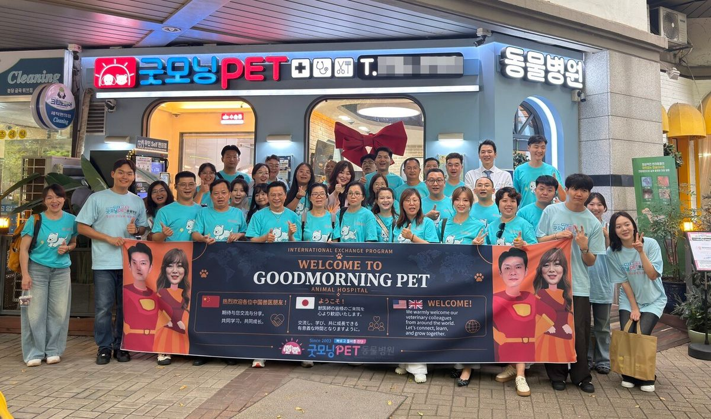
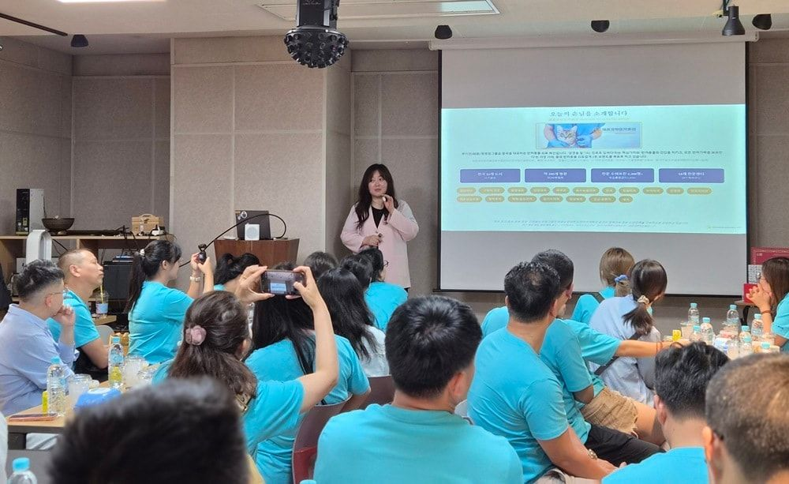
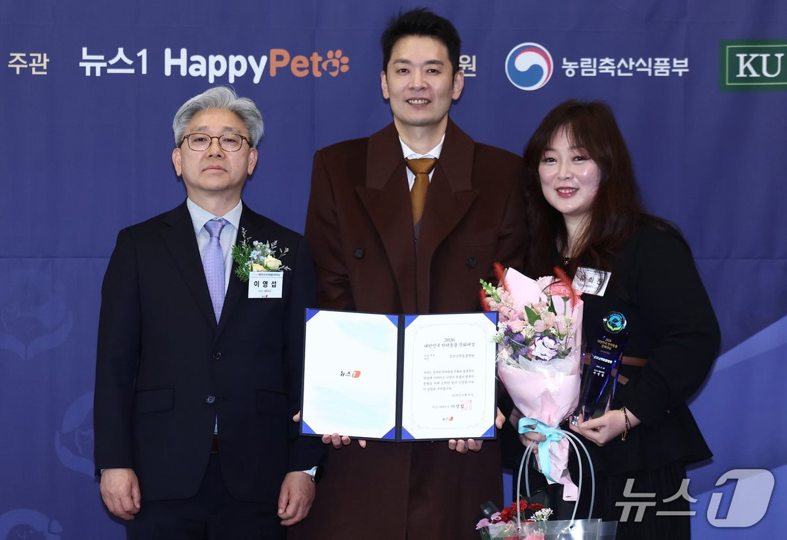
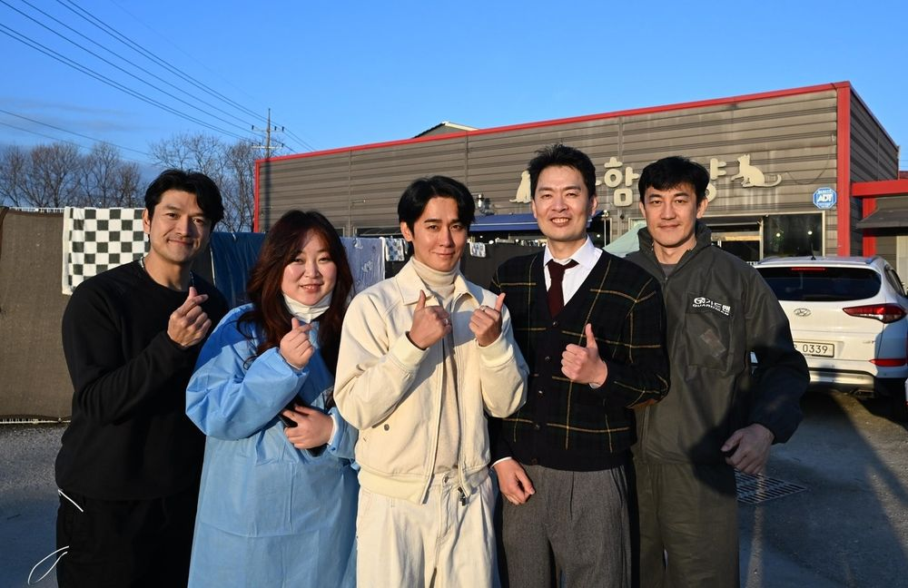

SINCE 2003 · 경기 성남시 분당구
스무 살까지,
함께 걷는 병원
2003년 분당의 작은 1인 동물병원에서 시작해, 23년째 같은 자리를 지키고 있습니다.
아이를 끝까지 보는 평생 주치의, 분당 굿모닝펫동물병원입니다.
2026 대한민국 반려동물 문화대상 교육 부문 대상
- 월·화·수 진료
- 당일 비대기 08:30–11:00
- 주차 3시간 무료
오늘 진료 상태를 확인하고 있습니다.
개원
2003년
분당에서 첫 진료
함께한 시간
23년
한 아이를 끝까지 보는 시간
수술
21,425건
원장님이 직접 집도
건강검진
19,617건
원내에서 직접 검사
2026 대한민국 반려동물 문화대상
교육 부문 대상 (뉴스1 대표이사상)
01 — 병원 소개
내 아이라면, 나라면.
말 못 하는 아이의 입장과 엄마·아빠 보호자의 입장에서 먼저 판단합니다. 그 기준 하나로 23년을 지켜 왔습니다.
2003년 분당에서 첫 진료를 시작했습니다. 그때부터 지금까지, 아이를 끝까지 보는 평생 주치의로 같은 자리를 지키고 있습니다. 보호자님의 소개로 이어진 시간이 23년입니다.
수술은 원칙과 기본에 충실합니다. 아이마다 상태가 다르니, 같은 수술도 그 아이에게 맞는 방법으로 합니다.
- 01최다 경험23년, 원장님이 직접 집도해 온 기록
- 02최소 절개아이에게 필요한 만큼만
- 03최단 시간마취 시간을 짧게
- 04완벽 봉합회복까지 생각한 마무리
- 05완전 무통통증 없이 지낼 수 있도록
오픈 수술실
수술실을 유리창으로 열어 두어, 보호자님이 수술 과정을 지켜보실 수 있습니다. 공개 여부는 보호자님이 결정하십니다.

숫자는 자랑이 아니라
경험의 깊이입니다.
수술 21,425건, 건강검진 19,617건 — 모두 원장님이 직접 해온 기록입니다. 2003년 분당의 작은 1인 동물병원에서 시작한 시간이 지금도 이어지고 있습니다.
- 21,425건 수술
- 19,617건 건강검진
- 23년 한 자리
02 — 작은 팀, 빈틈없는 하루
사람은 셋,
일은 그물망으로.
원장 1명, 근무자 2명. 진료는 주 2.5일. 이 작은 팀이 23년째 빈틈없이 돌아가는 이유는, 일하는 방식을 종이와 기억이 아니라 서로 맞물린 26칸의 그물망으로 만들어 두었기 때문입니다.
1
수의사
장봉환 대표원장이 진료와 수술을 직접 봅니다.
2
근무자
진료검사과 1명, 원무과 1명. 두 사람이 접수부터 안내까지 이어 받습니다.
2.5
일 진료
월·화·수 진료. 목요일은 연구와 정리, 남은 날은 배움에 씁니다.
한 번의 방문을 오래 이어 주는 다섯 칸
- GVN진료 신청증상과 희망일을 남기면 확인 문구까지
- GHN건강관리표내원 전에 적어 오면 진료가 빨라집니다
- GCN진료보드오늘 누가 왜 오는지 한눈에
- GTN진료 코멘트진료 후 소견을 카톡으로
- GSN재구매·재고다음 방문까지 끊기지 않게
이 다섯 칸이 G-시리즈 A~Z, 26칸의 뼈대입니다. 한 칸이 비면 그물이 풀리기에, 서로를 연결해 두었습니다.

“직원도 편하고, 보호자도 편하고, 병원에도 좋은.”
좋은 시스템은 한 사람이 없으면 무너지는 구조가 아니라, 누가 쉬어도 돌아가는 구조라고 믿습니다. 그래서 굿모닝펫은 병원이 커지는 대신 일이 흐르는 길을 넓혀 왔습니다.
그 결과가 진료 신청부터 건강관리표, 진료보드, 코멘트, 재구매까지 이어지는 G-시리즈 A~Z 그물망입니다.
03 — G-시리즈 A~Z
26칸이 서로를
연결한 그물망
진료·안내·재방문을 하나로 잇는 굿모닝펫의 운영 시스템입니다. 각 칸은 현장에서 실제로 쓰는 도구이고, 서른 개의 알파벳 중 필요한 자리에만 정확히 놓였습니다.
- A사입·정산
- B미용
- C진료보드
- D검사 해설
- E참관·교육
- F사료·급여
- G이용 가이드
- H건강관리표
- I질문 수첩
- J생일 카드
- K처방 해설
- L검사실
- M매뉴얼
- N자동화
- O개원 스토리
- P포지션·일보고
- Q보고 퀴즈
- R채용
- S재고·재구매
- T카톡 안내
- U응급 대처
- V진료 신청
- W체중·만성질환
- X미내원 관리
- Y백신·검진
- Z마감·청소
26칸 전체를 한눈에 보고 싶으시면 벌집 모양 그물망 포털에서 각 칸의 쓰임과 화면을 바로 확인하실 수 있습니다.
A~Z 그물망 포털 열기04 — 진료 안내
오시기 전에
이것만 확인하세요
진료는 월·화·수. 당일 접수는 선착순이라 일찍 마감될 수 있습니다. 내원 전에 카카오톡으로 먼저 물어봐 주세요.
당일 접수 (비대기)
오전 08:30 – 11:00 선착순. 수술·진료 상황에 따라 일찍 마감될 수 있으니, 오시기 전에 카톡으로 가능한지 먼저 확인해 주세요.
진료 순서
① 응급 ② 확정 예약 ③ 당일 비대기. 예약 없이 오시면 진료가 어려울 수 있습니다.
휴진 안내
목·금·토·일·공휴일은 휴진입니다. 목요일은 연구일, 금요일은 분야별 전문병원 탐방, 토요일은 국제 소동물 외과 인증 과정 이수로 자리를 비웁니다.
응급일 때
생명이 위급하면 바로 내원해 주세요. 진료가 없는 날은 차트가 연동된 서현 해마루이차진료동물병원(031-781-2992)에서 봅니다.
처방약·용품 픽업
진료 시간 외에도 건물 외부 키오스크에서 365일 24시간 받으실 수 있습니다.
진료 중 전화
진료 중에는 전화 연결이 어려울 수 있습니다. 카카오톡에 ‘전화 필요’라고 남겨 주시면 확인 후 연락드립니다.
05 — 내원 전 준비
한 장 미리 적어 두면
진료가 달라집니다
증상을 말로 설명하기 어려운 날이 많습니다. 건강관리표를 미리 적어 오시면 무엇을 물어야 할지 정리된 채로 진료를 시작할 수 있습니다.
06 — 수상·언론
교육 부문 대상,
그리고 23년의 기록
2026년 11월 26일, 뉴스1이 주최한 「2026 대한민국 반려동물 문화대상」에서 교육 부문 대상(뉴스1 대표이사상)을 받았습니다. 작은 병원이지만 배우고 나누는 일에는 먼저 손을 들었고, 그 시간이 기록으로 남았습니다.

2026 대한민국 반려동물 문화대상
교육 부문 대상
(뉴스1 대표이사상)
동물을 위한 일이 곧 사람을 위한 일이라는 마음으로 해 온 교육과 나눔을 인정받았습니다. 상은 병원이 아니라, 23년 동안 아이를 데리고 와 주신 보호자님들의 것입니다.
- 2023MBN 뉴스7 · 서울수의컨퍼런스에 소개된 1인 동물병원
- 2026.06건국대 수의학도를 위한 경영학 세미나 발표
- 2026.08부산 수의사 컨퍼런스(BVC) — 주 2.5일 진료 운영 발표
- 2026.09중국 루이첸 동물병원 수의사 35명 방문·연수
- 2026.11킨텍스 동물보건사 연수교육 300명 강연
- 연재헬스경향 — 장봉환 원장 칼럼

나눔
개원한 해부터 매달 빠짐없이
2003년 첫 진료를 시작한 그해부터 사료 기부와 봉사를 이어 오고 있습니다. 아이들이 건강하게, 그리고 조금 더 많은 아이들이 가족을 만날 수 있도록.
07 — 오시는 길
분당두산위브
108동 1층
경기 성남시 분당구 정자일로 55, 분당두산위브 108동 1층 110호 (금곡동 192). 주차는 3시간 무료입니다.
주차
분당두산위브 지상 1층·지하 1층 상가 주차장을 쓰시면 3시간까지 무료입니다. 차단기 인터폰에 “굿모닝펫 방문차량입니다”라고 말씀하시면 열립니다. 인증은 원무과에서 하시거나 대기실 패드에서 직접 하실 수 있습니다.
대중교통
- 미금역 (수인분당·신분당) 7·8번 출구 → 도보 약 10분
- 정자역 3번 출구 앞 마을버스 2번 → 5분
- 마을버스 1·2번 → ‘두산위브’ 정류장 하차, 바로 앞
- 일반·광역버스 → ‘분당경영고·청솔중’ 하차 후 도보 5분
지방에서 오시는 길
- 강남역약 40분신분당선 → 미금역(21분) → 도보 10분
- 고속터미널역약 45분3호선 → 양재에서 신분당선 환승 → 미금역
- SRT 수서역약 40분수인분당선 환승 없이 미금역까지 25분
- 성남종합버스터미널약 25분야탑역 → 수인분당선 미금역 11분
- 김포공항약 1시간 20분9호선 → 신논현에서 신분당선 환승 → 미금역
- 인천공항 T1약 1시간 45분리무진 5400-1번 → 미금역·청솔마을 하차
소요 시간은 평일 오전 9시 30분 출발 기준입니다. 당일 운행·교통 상황에 따라 달라질 수 있습니다. 기차로 오시면 SRT 수서역에서 수인분당선으로 환승 없이 미금역까지 오시는 길이 가장 편합니다.
멀리서 오시는 날은 비대기 접수 마감을 놓치지 않도록, 출발 전에 카카오톡 goodpet으로 도착 시간을 알려 주세요. 대기 상황을 미리 확인해 드립니다.
08 — 문의
예약과 문의는
카카오톡이 가장 빠릅니다
진료 중에는 전화를 받기 어렵습니다. 카카오톡으로 남겨 주시면 확인 후 순서대로 답 드립니다.
카카오톡 ID
goodpet
카카오톡에서 goodpet을 검색해 친구 추가 후 메시지를 보내 주세요.
- 진료일
- 월 · 화 · 수
- 당일 접수
- 08:30 – 11:00 (선착순)
- 운영
- 월 – 목 09:00 – 17:00
- 주소
- 성남시 분당구 정자일로 55, 분당두산위브 108동 1층 110호
자주 묻는 질문
보호자님이 가장 많이
물으시는 것
예약 없이 그냥 가도 되나요?
진료일(월·화·수) 오전 08:30 – 11:00에 당일 접수를 받습니다. 선착순이라 일찍 마감될 수 있으니, 오시기 전에 카카오톡 goodpet으로 당일 접수 가능한지 먼저 물어봐 주세요.
주차는 어떻게 하나요?
분당두산위브 지상 1층·지하 1층 상가 주차장을 쓰시면 3시간 무료입니다. 차단기 인터폰에 “굿모닝펫 방문차량입니다”라고 말씀하시면 열립니다.
검사 전에 금식해야 하나요?
수술은 6시간 전 금식 · 3시간 전 금수입니다. 종합검진은 대소변 검사를 위해 보지 않고 오시면 됩니다. 그 밖의 검사 금식 여부는 아이 상태에 따라 달라지므로 예약하실 때 카톡으로 안내드립니다.
건강관리표를 미리 작성해야 하나요?
필수는 아니지만, 내원 전에 건강관리표를 미리 적어 오시면 증상 설명이 빨라져 진료가 수월합니다. 내원 전날 링크를 카카오톡으로 함께 보내드립니다. 건강관리표 미리 쓰기
미용도 예약해야 하나요?
미용은 예약제입니다. 예약 전에 진료 이력과 접종 상태를 확인하고, 컨디션에 따라 미용이 어려울 수 있어 카카오톡으로 먼저 문의해 주세요.
오늘은 진료일이 아닌데 응급이에요.
생명이 위급하면 바로 내원해 주세요. 진료가 없는 날은 차트가 연동된 서현 해마루이차진료동물병원(031-781-2992)에서 봅니다. 아이 상태를 바로 확인할 수 있습니다.
처방약만 받으러 갈 수도 있나요?
진료 시간 외에도 건물 외부 키오스크에서 처방약·용품을 365일 24시간 픽업하실 수 있습니다.